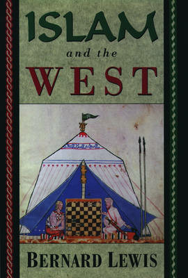

6:52 · 1 OPERA
Ciechi al male.
Il filo del discorso
A un anno dal 7 ottobre 2023, l’autore contesta le reazioni occidentali al massacro e sostiene che parte del dibattito abbia capovolto il rapporto fra aggressori e vittime. Una citazione di Bernard Lewis introduce una lettura di lungo periodo dei rapporti fra Islam ed Europa. Il nucleo del commento è la distinzione fra empatia vissuta e simulazione morale; la conclusione attribuisce a Israele una funzione culturale e politica di difesa. Si tratta di una presa di posizione polemica dell’autore.
I libri nel discorso

Islam and the West
Copertina: Oxford University Press, 1993
Edizione illustrativa dell'opera; nessuna edizione è attribuita al video.
Titolo inglese e nome di Bernard Lewis pronunciati prima della citazione.
Passaggio 1:13 ↗ · Fonti e libro ↗